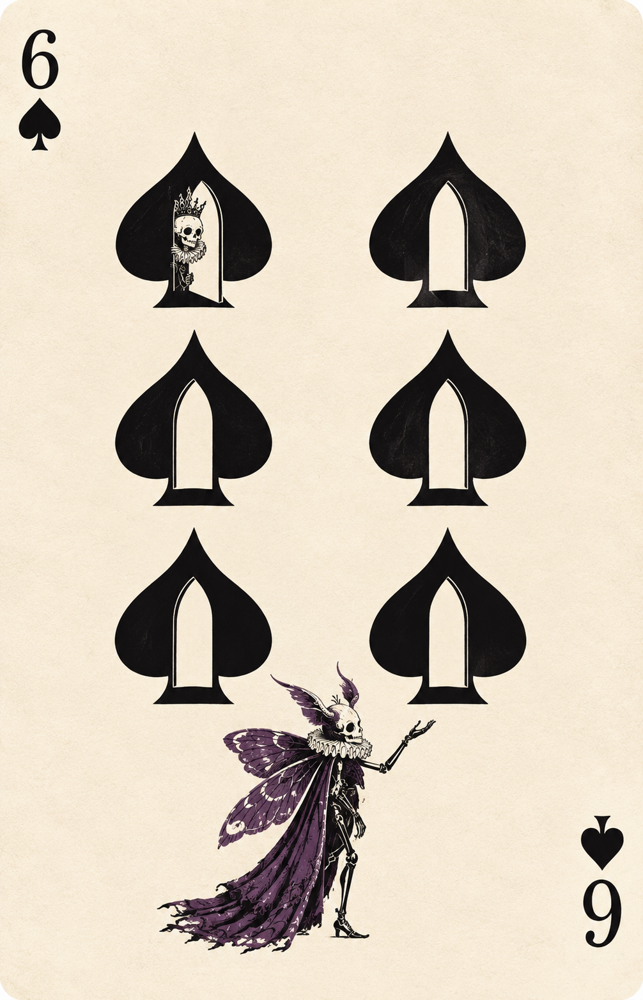
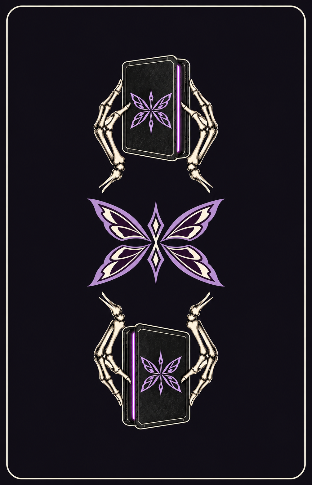

54 cards in each deck. Physical editions in development. No orders or support payments open.

Playing deck · concept study

Shared dark back · concept study
Current stage · Concept studies; no complete print filesNext gate · Finished art & physical proofsMade for · Play, reflection, return
Two ways into the same story
One guardian. Two decks.
A card has to work in your hand before it earns a place in your collection. The playing deck keeps familiar ranks and suits. The oracle gives PIXIE’s story more space. Both share her codex, her sigil and the freedom to put the cards down.
54
The playing / Cardology companion
52 standard cards and two clearly ranked jokers. Transformation scenes weave familiar pips into heart lanterns, club flowers, repaired diamonds and spade doorways.
BridgeHeartsSpadesBid Whist
Cardology explores symbolic relationships between playing cards, calendars and life. Its established date mappings require a sourced guide. Our proposed story chapters are original interpretation, not a replacement for that system.
54
The tarot-inspired oracle
22 proposed archetype cards and 32 journey cards: eight for each chapter. A custom reflection deck, distinct from a conventional 78-card tarot deck.
Short titlesCompanion guideNo reversalsOptional prompts
PIXIE observes, seeks understanding and suggests. She does not predict what will happen or choose for you. You bring the philosophy you want to stay connected to.
AI-generated visual studies. These earlier studies still show a paper book; final artwork will use her sigilled digital codex throughout. Completed oracle faces are not yet available.
Story space · This four-chapter outline is a proposed development structure, not a finished or approved canon. PIXIE is nonhuman. Her little black book is a compact digital codex bearing her sigil—not a paper book or the name of these decks. This space will hold her approved tale, card-by-card scenes and guide entries as they are completed.
Follow her tale
She learns to keep a story without owning its ending.
♣
01 · Awakening
PIXIE opens her codex. She learns to record an observation before turning it into a story.
♥
02 · Listening
A musician, a ghost, an unfamiliar voice. She learns that attention is an invitation, not permission to intrude.
♦
03 · Repair
Fragments can be kept. Some can be mended. She learns to ask whose repair it is before reaching for the needle.
♠
04 · Choosing
Every door has a threshold. She learns to leave an exit open—and that returning must remain a choice.
A small grounding practice
What did you notice before deciding what it means?
Observe. Understand. Consider a suggestion—or none.
Like moving through prayer beads, touching a card can be a way to return to values you have chosen. There is no prescribed faith, streak, compulsory sharing or promised therapeutic effect. PIXIE is a created character, not a human; no birth-date or creation-day reading is assigned.
Make with us
Bring your craft. Keep your agency.
We need people who understand both the creative work and the reality of getting a physical product made. Playtesting, illustration and production each have a place. A recently lost job is not a reason to undervalue someone’s work.
Creators & card players
Test real useFan 13 cards. Read ranks. Tell the jokers apart. Try Bridge, Hearts, Spades or Bid Whist using agreed house rules.
Tell us what failedNote confusion, visual fatigue, handling problems and prompts that felt intrusive. Praise is not a condition of participation.
Share on your termsNo posting is required. A free deck, payment or other material connection must be clearly disclosed if you discuss the project publicly.
Recruitment brief in development. Print quantities, sample availability and compensation will be agreed before anyone accepts a test assignment. No samples are promised by this page.
Artists & production collaborators
Start with an existing portfolio and a clear scope. No unpaid bespoke audition, no requirement to prove a layoff, and no promise of a commission before a budget exists.
Use the training pathway to discuss the creative brief alongside manufacturing, licensing, revisions, distribution and sustainable margins. An artist’s fee is a cost to plan honestly—not a problem to hide.
Any commission needs a written agreement on payment, deliverables, revisions, credit, usage rights and the work you retain. Learning participation does not transfer artwork rights.
How to begin
Choose playtesting, content creation, illustration or production. Prepare the introduction below, then visit Loptr Lab’s training pathway to explore the available participation options. Preparing a brief here does not enroll you or send it to us. Direct project intake and test assignments are not open yet; sample dates and paid scopes will be posted here before recruitment opens.
Prepare a collaborator introduction
Make a brief you can take to the training pathway or a future project contact. Nothing is submitted here. It stays in this page until you copy or download it; we do not collect personal details.
Make your own deck
Your story can become a deck.
MakePlayingCards is one suggested print service. You can develop your own playing deck or reflection deck independently; participation in PIXIE is not required. Our PIXIE concepts are not a downloadable licensed template.
Choose the tool and countFor standard games, preserve readable ranks, suits, pips and the jokers your rules need. For an oracle, define your own entries and guide. Start with paper mockups.
Prepare artwork you may useCreate original images or obtain written commercial permissions. Check fonts, symbols and packaging as well as illustrations. AI-provider terms and copyright protection are separate questions.
Choose the printer product and templateVisit MakePlayingCards. Select size, card count, stock, finish and packaging, then use that product’s current template. Its image preparation guide lists bridge cards as 2.25 × 3.5 inches with a minimum 747 × 1122 pixel upload at 300 dpi. Confirm the selected template before exporting.
Upload and review every cardKeep critical content inside safe areas and extend backgrounds through bleed. Check front order, back orientation, symmetry and the online preview. Do not rely on screen images to judge physical quality.
Order a proof before a runInspect actual cuts, contrast, finish and packaging. Fan 13 cards and play full hands. Revise before ordering quantities; calculate shipping and replacements as well as printing.
Choose your sales routeDirect sales and the MPC marketplace have different obligations. Confirm the printer’s current rights requirements, listing terms, prices and fulfillment arrangements before promising products.
Suggested workflow, not an affiliation or manufacturer approval. PIXIE’s two decks still need 108 finished fronts, a verified back, final guide and physical proof.
Authorship in the open
A process you can inspect.
The artist’s name, the work and the economics belong in the same frame.
AI has made these concepts tangible while the founder faced difficult collaboration experiences and costs beyond the available budget. That experience is part of this project. It does not stand in for a verdict on every artist or the value of human craft.
Proposed comparison. No human trial or completed commission is claimed.
What we document
AI-assisted concept studies
Human-authored illustration
Current evidence
Generated studies shown on this page; owner-selected direction and revisions.
No commissioned work yet. Space reserved for participating artists with consent.
Same brief
PIXIE’s tale, exact pips, codex, sigil and minimal composition.
The same functional brief; freedom to reinterpret through an agreed paid scope.
Costs & time
Record generation charges or credits, editing time and rejected outputs. Not assumed free.
Record fees, hours, revisions and licensing scope. No invented quote.
Quality
Test character consistency, correct pips, readability and print defects.
Use the same tests, with equal review conditions and attribution.
Rights & credit
Label AI involvement. Provider terms do not guarantee exclusive copyright or clearance.
Credit each artist and document actual authorship and agreed rights.
The comparison is an evidence record—not a contest requiring artists to work for free, and not proof that one method is always better. Royal Mischief informed the transformation-deck format; its artwork is not reproduced here.
The reality behind the margins
Two decks. One honest budget.
A 100-set run means 200 decks, plus packaging and guides. The calculator below is an editable illustration, not a printer quote, campaign target or advertised price. It counts a paid art budget and a reserve of ten sets.
Modeled cash break-even
Available after ten-set reserve
Fixed run commitment
Contribution / sale
Surplus at sellout, before tax
Art budget is a placeholder, not a full-deck illustrator quote. Owner labor, marketing, licensing, returns and applicable taxes may add costs. No printer, postage or payment rate is confirmed.
Support the next concrete step
The familiar creator-support model—small contributions, clear updates, visible progress—can help a project grow. This project will choose a payment channel after costs and terms are ready. Buy Me a Coffee is a reference model, not our checkout or an implied partner.
First
Artwork & authorship
Agree the art approach, commission scope and rights. Complete 108 fronts and a verified shared back.
Then
Proofs & playtesting
Inspect actual stock and packaging. Test both decks with players and creators before taking orders.
After evidence
A funded print run
Publish written quotes, delivered prices, refund terms and the order threshold. Direct support and preorders remain distinct.
Financial support is not open. There is no funding meter, donation receipt, stock counter or delivery promise. Future support must state whether it buys a product, funds development or carries any reward. We make no charitable tax-deduction or investment-return claim.
Credit & legacy
Say her name. Keep the credit visible.
Pamela Colman Smith illustrated the Rider–Waite–Smith tarot deck, first published in 1909. Her visual contribution belongs in the story of those cards, not in a footnote. Read the V&A’s account.
Loptr Lab’s PIXIE is an original nonhuman character. This project’s attention to credit and creative economics is a response to Smith’s legacy; it is not an authorized continuation of her work, an estate project or a claim that she endorsed AI.
Project statement · credit, access and authorship
The art, the artist’s credit and the economics should remain visible together.
This project is an artistic statement about access to creation and how illustrators are credited, informed by Pamela Colman Smith’s legacy. It is not a legal accusation or a claim to speak for her. Specific claims about compensation, contracts or wrongdoing require documentary evidence. This editorial statement is not a quotation from Dominique. The founder’s experience with inaccessible costs and difficult collaboration informs this work. Our response is a clearer brief, visible budgets, explicit credit and agreements people can understand.
What this history does—and doesn’t—establish
The museum source establishes Smith’s role and her influence on illustrated tarot. This page does not claim a verified amount she was paid, a royalty agreement, theft by a named publisher or approval from her descendants. Specific financial-history claims require primary documentation before publication.
We use newly generated PIXIE concepts here, not Smith’s historical artwork, museum reproductions, modern recolorings or Patrick Valenza’s images. That choice does not eliminate the need to review our own assets and name.
Artwork rights & AI disclosure
Current images were generated with OpenAI’s image tool and selected through an owner-directed process. OpenAI assigns its rights, if any, in output subject to its terms and applicable law. That does not guarantee uniqueness, non-infringement or copyright protection. The US Copyright Office requires sufficient human authorship for protected expression. We cannot independently audit the model’s training sources.
No commissioned artist license exists yet. Future artwork agreements must define payment, modifications, reproduction, distribution, credit and retained rights. Generation records and actual human-authored changes should be preserved. No commercial rights clearance is represented as complete.
PIXIE and related names need trademark searches across relevant goods and services, including unregistered uses. A common word or a historical inspiration does not establish clearance. We claim no affiliation with Pamela Colman Smith’s estate, Rider–Waite–Smith publishers, the International Association of Cardology, Deviant Moon, Buy Me a Coffee or MakePlayingCards.
Any future use of historical images needs an item-specific rights review covering publication, territory, reproductions and later editions. We have not established blanket public-domain permission for every tarot image or museum photograph.
Reviews must remain honest. A free sample, payment or other material connection should be clearly disclosed wherever a creator talks about the deck; a note buried on this page is not sufficient. No favorable review or public post is required.
This review site has no submission service, analytics or payment collection. Introduction and budget tools work in the browser; downloads are initiated by you. External training and source links have their own privacy practices. A future intake service needs its own consent, retention and deletion details before launch.
MakePlayingCards is a proposed manufacturer, not a confirmed production partner. Its marketplace FAQ asks for full copyright ownership; acceptance of this AI-assisted project requires clarification. We have no physical sample, verified stock count, finalized quote or ship date.
Before merchandise orders open, we need a reasonable basis for the advertised ship date, clear terms, and a process for consenting to delays or obtaining refunds under the applicable FTC merchandise-order rule. Development support must not masquerade as a guaranteed preorder. This research is a working project assessment, not a legal opinion or a completed clearance.
Research reviewed October 8, 2026. Legal clearance, artist contracts and manufacturing approval remain open.
A listening companion
Music along the way.
Optional connections from the IBLoud.xyz journey. Titles and official listening links only; no recordings, lyrics or cover artwork are reproduced, and no artist endorsement is implied.